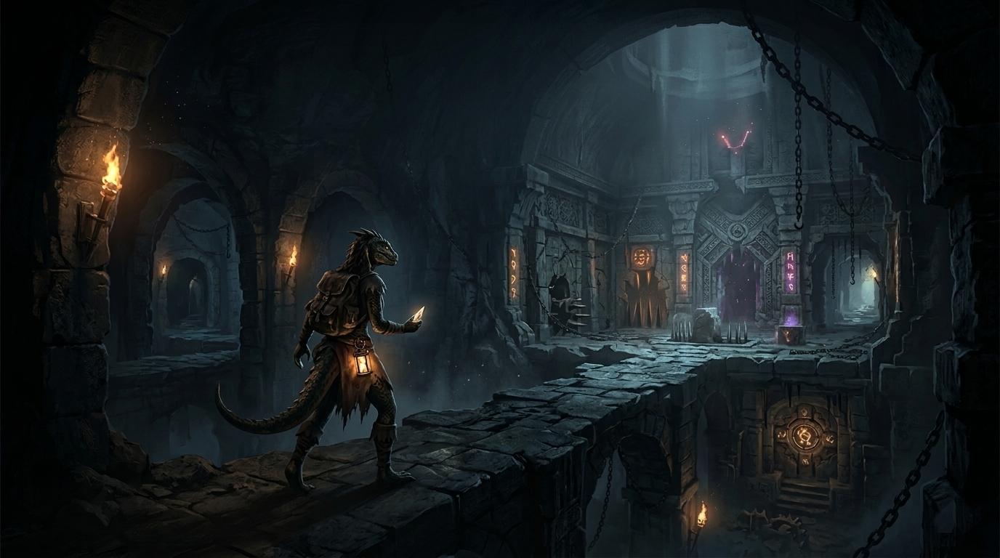
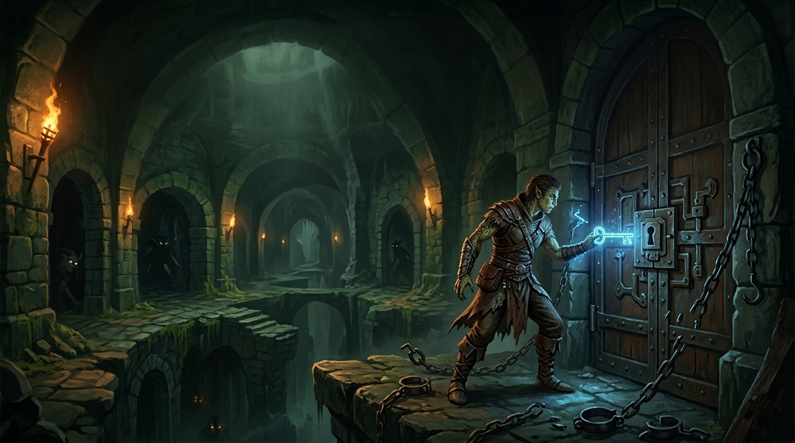
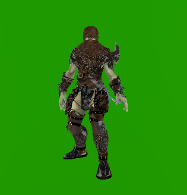
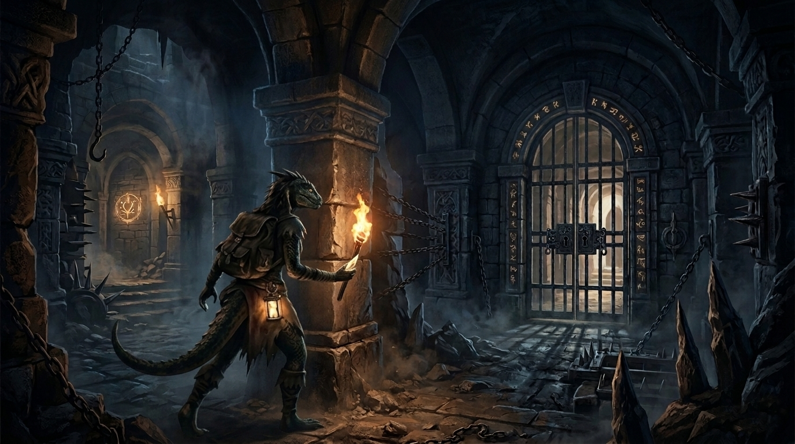

Escapa de les trampes!
L'entorn és el teu primer enemic. Hi ha diversos puzzles i trampes repartides arreu de la masmorra. Sigues cautelós, observa els patrons i utilitza la teva agudesa mental per no caure-hi.


"La teva supervivència depèn de la teva capacitat per adaptar-te i superar els reptes de l'abisme."

L'entorn és el teu primer enemic. Hi ha diversos puzzles i trampes repartides arreu de la masmorra. Sigues cautelós, observa els patrons i utilitza la teva agudesa mental per no caure-hi.
Trobaràs enemics que intentaran aturar-te a qualsevol preu. Però compte: no tot el que es mou a la foscor és hostil. Alguns éssers poden ser vitals per a la teva experiència si saps com interactuar-hi.
L'objectiu final és la llibertat. Però a quin preu? La teva integritat física i mental es veurà posada a prova en cada nivell. Només aquells que sàpiguen gestionar els seus recursos arribaran a la sortida.

Descobreix el perquè del teu segrest. El món de OUT amaga secrets antics sobre el conflicte entre orcs i draconians. Troba documents i relats que revelin els plans ocults dels teus captors.